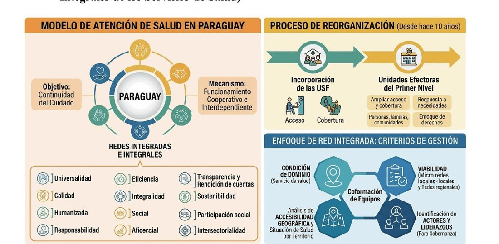
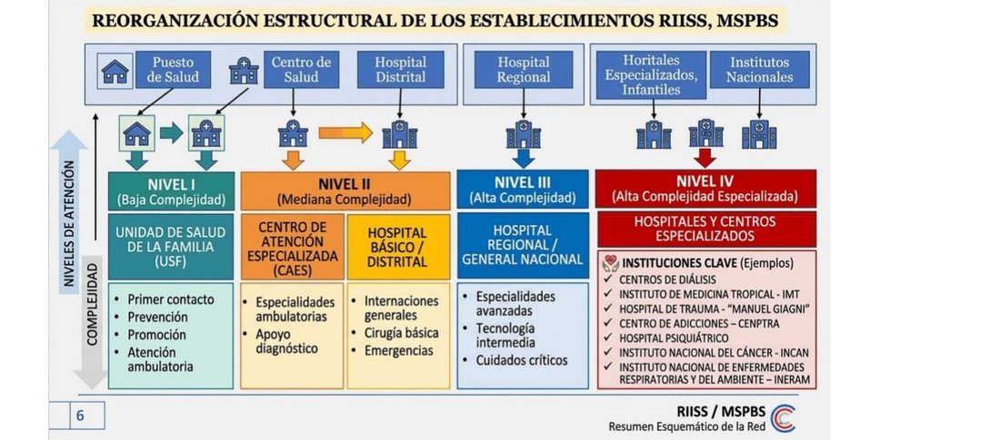
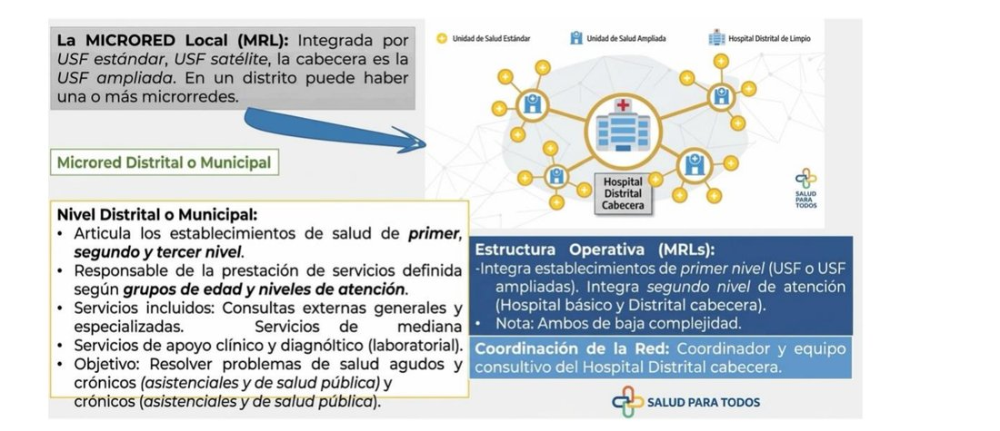
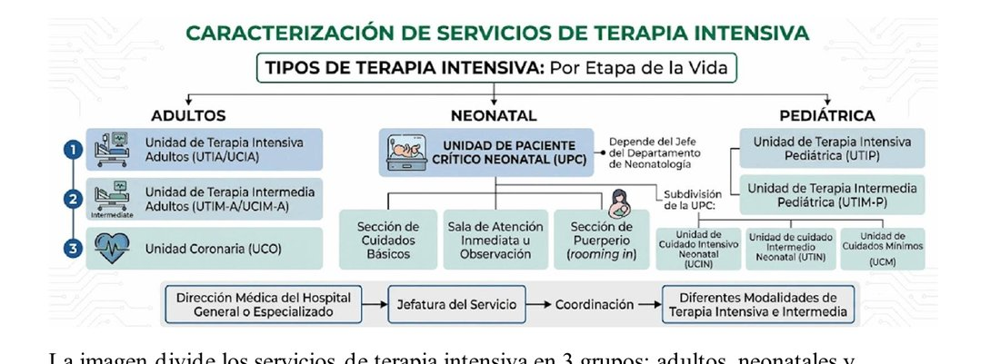
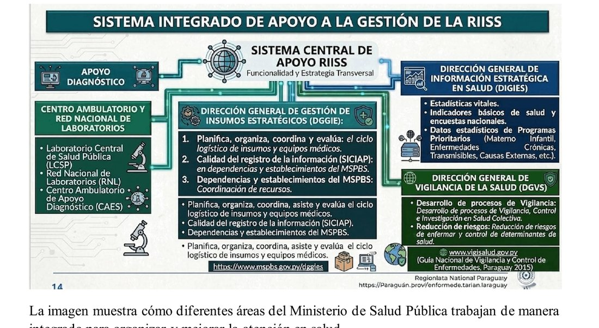

ClinicusMed · Dossiê Clinicus — Padrão de Excelência
No Capítulo 1, vimos que o Sistema de Saúde do Paraguai é composto por subsetores público (MSPyBS, IPS, Sanidade Militar/Policial, UNA, Itaipu/Yacyretá) e privado, com o MSPyBS atendendo cerca de 65% da população. Agora vamos aprofundar justamente COMO esse sistema público se ORGANIZA na prática — e a resposta pra isso é um modelo chamado RIISS.
Pra isso funcionar de verdade, a estratégia fortalece especificamente as USF (Unidades de Saúde da Família) — a mesma sigla que já vimos no Capítulo 2 sobre APS — como a porta de entrada dessa rede, buscando melhorar o acesso e a cobertura da população.
E quais os PRINCÍPIOS que orientam esse modelo? Repara como eles ecoam (e ampliam) os princípios de sistema de saúde que já vimos no Capítulo 1 (Universal/Integral/Equitativo/Sustentável) — na verdade, o material oficial lista 12 princípios ao todo:
Tudo isso considerando as NECESSIDADES específicas de cada comunidade e território — reforçando que não existe um modelo único que sirva igual pra todo lugar do país.

Pensa nesses 4 níveis como uma PIRÂMIDE de complexidade crescente: quanto mais alto o nível, mais grave/complexo o caso que ele resolve, e mais especializado (e mais caro/escasso) é o recurso disponível ali. A LÓGICA por trás disso é clara: nem todo problema de saúde precisa de um hospital de alta tecnologia — a maioria pode (e deve) ser resolvida no nível mais BÁSICO possível, reservando os níveis superiores pra quem realmente precisa deles.
| Nível | Complexidade | Estrutura | Função |
|---|---|---|---|
| I | Baixa | USF (Unidade de Saúde da Família) | PORTA DE ENTRADA do sistema — primeiro contato, prevenção, promoção da saúde, atenção ambulatorial (ex.: consulta por um problema de saúde comum) |
| II | Média | CAES (especialidades ambulatoriais + apoio diagnóstico) e Hospital Básico/Distrital | Atende problemas que precisam de ESPECIALISTAS ou atenção hospitalar básica — internações gerais, cirurgias básicas e emergências |
| III | Alta | Hospital Regional ou Geral Nacional | Atende pacientes com problemas MAIS GRAVES/complexos — especialidades avançadas, tecnologia intermediária, cuidados críticos |
| IV | Alta especializada | Hospitais e centros especializados | O nível de MAIOR especialização — tratamentos altamente especializados |
Exemplos concretos de instituições-chave do Nível IV: Centros de Diálise, Instituto de Medicina Tropical (IMT), Hospital de Trauma "Manuel Giagni", Centro de Adições (CENPTA), Hospital Psiquiátrico, Instituto Nacional do Câncer (INCAN), Instituto Nacional de Doenças Respiratórias e do Ambiente (INERAM).

Repara no fluxo lógico do paciente dentro dessa microrrede: a USF é o PRIMEIRO nível de atenção e normalmente a PORTA DE ENTRADA do paciente no sistema. SE a USF consegue resolver o problema, o paciente CONTINUA sendo atendido ali mesmo. SE ela precisa de um serviço que a USF não tem disponível, o paciente é DERIVADO ao Hospital Distrital, que funciona como cabeceira/referência da microrrede.

Dentro do Nível III/IV de complexidade, os serviços de terapia intensiva se dividem em 3 grandes grupos, cada um com suas próprias subdivisões por gravidade:
| Unidade | Atende |
|---|---|
| UTIA/UCIA | Adultos CRITICAMENTE enfermos, que precisam de cuidados INTENSIVOS |
| UTIM-A/UCIM-A | Pacientes que precisam de cuidados INTERMEDIÁRIOS, mas não terapia intensiva plena |
| UCO | Principalmente pacientes com problemas CARDÍACOS graves |
Pra recém-nascidos, existe a UPC (Unidade de Paciente Crítico Neonatal), que se subdivide por gravidade decrescente:
| Unidade | Atende |
|---|---|
| UCIN | Cuidados INTENSIVOS pra recém-nascidos CRÍTICOS |
| UTIN | Cuidados INTERMEDIÁRIOS pra recém-nascidos mais ESTÁVEIS |
| UCM | Cuidados MÍNIMOS pra recém-nascidos que precisam de menor nível de atenção |
Além dessas 3, existem ainda: Cuidados Básicos (atenção geral do recém-nascido), Atenção Imediata/Observação (vigilância logo após o nascimento), e Puerpério (rooming-in) — onde o bebê permanece junto da mãe.
| Unidade | Atende |
|---|---|
| UTIP | Pacientes pediátricos CRÍTICOS |
| UTIM-P | Pacientes pediátricos que precisam de cuidados INTERMEDIÁRIOS |

Pra toda essa rede de atenção funcionar, existe um "centro nervoso" — o Sistema Central de Apoio RIISS — que coordena a estratégia e conecta 4 áreas diferentes do Ministério de Saúde:
| Área | Função central | Detalhe |
|---|---|---|
| 1. Apoio Diagnóstico | Diagnóstico e laboratório | Inclui o Laboratório Central de Saúde Pública (LCSP), a Rede Nacional de Laboratórios (RNL), e o Centro Ambulatorial de Apoio Diagnóstico (CAES) — apoiando o diagnóstico de doenças através de estudos e análises laboratoriais |
| 2. DGGIE | Insumos e equipamentos | Gestão de Insumos Estratégicos — planeja, organiza, coordena e avalia a logística de medicamentos/insumos/equipamentos, coordenando os recursos dos estabelecimentos de saúde |
| 3. DIGIES | Dados e informação | Informação Estratégica em Saúde — coleta, organiza e analisa informações de saúde: estatísticas vitais, indicadores de saúde, pesquisas nacionais, dados de programas prioritários, informação sobre doenças transmissíveis/crônicas |
| 4. DGVS | Vigilância e controle | Vigilância da Saúde — realiza vigilância epidemiológica, controle de doenças, pesquisa em saúde coletiva, redução de riscos e determinantes de saúde |

Além dessas 4 áreas internas de apoio à RIISS, existem outras instituições REGULADORAS, cada uma responsável por uma área específica de controle e regulação sanitária:
| Instituição | Área de atuação | Detalhe |
|---|---|---|
| SEME | Emergências e traslado de pacientes | Serviço regulador (controla as camas de terapia intensiva); traslados aeromédicos; medicina aeroespacial |
| ASANED | Desastres e emergências | Previne e reduz riscos de desastres; coordena a resposta dos estabelecimentos de saúde; organiza o Plano Nacional de Resposta |
| SENEPA | Controle de vetores | Controla vetores como mosquitos transmissores de dengue e Chagas — dentro do grupo maior "Saúde Ambiental" |
| SENASA | Saneamento ambiental e água potável | Também dentro do grupo "Saúde Ambiental" |
| DIGESA | Normas e ações de saúde ambiental | Estabelece normas e dirige ações — completando o trio de Saúde Ambiental (SENEPA + SENASA + DIGESA) |
| DINAVISA | Medicamentos seguros | Controla qualidade/segurança de medicamentos; regula e fiscaliza o setor farmacêutico; realiza farmacovigilância |
| INAN | Nutrição e alimentação | Planeja/controla programas de nutrição; controla qualidade de alimentos processados; o PANI (dentro do INAN) fornece apoio nutricional a gestantes e crianças |
| DNERHS | Recursos humanos em saúde | Políticas de formação, gestão, desenvolvimento e regulação dos profissionais de saúde |
Atenção pra não confundir: os 4 níveis de GESTÃO/vigilância que vamos ver agora são DIFERENTES dos 4 níveis de COMPLEXIDADE de atenção (I-IV) vistos no início desse capítulo. Aqueles organizavam o CUIDADO ao paciente por gravidade; esses aqui organizam como a INFORMAÇÃO epidemiológica flui e é processada dentro do sistema — é a espinha dorsal da VIGILÂNCIA EPIDEMIOLÓGICA, uma das estratégias transversais da RIISS.
| Nível | O que é | Como funciona |
|---|---|---|
| Local | A BASE da rede — equipe de saúde que trabalha diretamente nos estabelecimentos de atenção à comunidade | Atende pacientes de forma INDIVIDUAL e POPULACIONAL. DETECTA os primeiros casos/eventos de saúde, avalia a situação, completa os dados e os envia (via formulários) ao Nível Distrital. Também realiza as PRIMEIRAS ações de prevenção e controle |
| Distrital | Representado pelos centros assistenciais e hospitais organizados a nível de um distrito (ex.: um hospital distrital) | RECEBE e VERIFICA os dados vindos do nível local. Conta com uma equipe de vigilância que cumpre normas nacionais, avalia a informação relevante e a envia ao Nível Regional. Também apoia as ações de prevenção/controle do nível local |
| Regional | Conformado pela equipe de trabalho a nível regional | Intervenção do tipo POPULACIONAL. CONSOLIDA e verifica todos os dados enviados pelas unidades locais de sua zona, realiza análise regional, e envia a informação consolidada ao Nível Nacional. Também apoia os níveis local e distrital |
| Nacional | O nível CENTRAL da rede de vigilância, dentro do MSPyBS — é justamente a DGVS (Direção Geral de Vigilância da Saúde) que já vimos | Estabelece as NORMAS pra todo o país. Recebe, analisa e processa dados de todas as regiões (e outros setores) pra tomada de decisão nacional e internacional. Acompanha os níveis regional e local em pesquisas de saúde pública — sua intervenção abrange TODA a população do país |
Vamos acompanhar um paciente numa jornada real através dos diferentes níveis da rede de saúde paraguaia, desde o primeiro sintoma até a alta. O caso evolui em 3 níveis.
Um homem de 45 anos, morador de uma comunidade rural, procura a USF (Unidade de Saúde da Família) de seu setor por febre e dor de garganta há 2 dias. É atendido pelo médico de família, recebe orientações e medicação, e melhora em poucos dias.
Pergunta: Em qual NÍVEL DE COMPLEXIDADE da rede RIISS esse atendimento ocorreu, e por que esse caso ilustra bem o funcionamento IDEAL do sistema?
Resposta comentada: O atendimento ocorreu no NÍVEL I de complexidade (Baixa) — a USF, que funciona como a PORTA DE ENTRADA do sistema de saúde, responsável pelo primeiro contato, prevenção, promoção da saúde e atenção ambulatorial. Esse caso ilustra o funcionamento IDEAL do sistema porque exemplifica exatamente a lógica de organização em rede discutida nesse capítulo: um problema de saúde COMUM (febre e dor de garganta) foi resolvido no nível MAIS BÁSICO possível, sem necessidade de encaminhamento a níveis superiores — reservando os recursos mais escassos e especializados (Hospital Distrital, Hospital Regional, etc.) pra quem realmente precisa deles. Se esse mesmo paciente tivesse ido direto a um Hospital Regional (Nível III) pra tratar uma simples dor de garganta, isso representaria um uso INEFICIENTE da rede, sobrecarregando um recurso de maior complexidade com um caso que a USF já resolveria perfeitamente.
Meses depois, o mesmo paciente retorna à USF com dor torácica súbita e intensa. A equipe da USF reconhece que esse quadro pode ser grave e, como a própria unidade não tem recursos pra investigação cardíaca completa, decide encaminhá-lo.
Pergunta: Aplicando o conceito de Microrrede Local (MRL) visto nesse capítulo, pra onde esse paciente deveria ser encaminhado primeiro, e qual o papel dessa estrutura de referência dentro da microrrede?
Resposta comentada: Segundo o conceito de Microrrede Local (MRL), quando a USF NÃO consegue resolver o problema (como nesse caso de dor torácica que exige investigação cardíaca mais completa), o paciente deve ser DERIVADO ao HOSPITAL DISTRITAL — que funciona justamente como a CABECEIRA (ou referência) da microrrede à qual aquela USF pertence. O papel dessa estrutura de referência é oferecer um nível de complexidade INTERMEDIÁRIO (Nível II, correspondendo a Hospital Básico/Distrital) — capaz de realizar internações gerais, cirurgias básicas e atender emergências, um degrau acima da capacidade resolutiva da própria USF, mas ainda não exigindo, necessariamente, a estrutura de um Hospital Regional (Nível III). É esse fluxo organizado — USF tenta resolver primeiro, e só encaminha ao Hospital Distrital quando genuinamente necessário — que caracteriza o funcionamento coordenado de uma microrrede, evitando tanto a subutilização da USF quanto a sobrecarga desnecessária de níveis superiores.
No Hospital Distrital, os exames confirmam um Infarto Agudo do Miocárdio. O paciente precisa ser rapidamente encaminhado a um centro com capacidade de hemodinâmica, e posteriormente pode precisar de cuidados intensivos cardíacos especializados.
Pergunta: Integrando os conceitos de Código Infarto (visto no Capítulo 3), Níveis de Complexidade da RIISS, e Caracterização dos Serviços de Terapia Intensiva vistos nesse capítulo, descreva a sequência provável de encaminhamento desse paciente, e qual unidade de terapia intensiva especificamente seria mais apropriada pra ele, se necessário.
Resposta comentada: Essa situação ativa exatamente o CÓDIGO INFARTO visto no Capítulo 3 — o protocolo de ativação precoce que direciona o paciente pra HEMODINÂMICA/CARDIOLOGIA, exigindo intervenção rápida pra infartos agudos do miocárdio. Como o Hospital Distrital (Nível II) provavelmente não possui capacidade de hemodinâmica, o paciente precisaria ser encaminhado a um centro de NÍVEL III (Hospital Regional ou Geral Nacional) — que, segundo esse capítulo, conta com especialidades avançadas, tecnologia intermediária e cuidados críticos, incluindo capacidade de hemodinâmica cardíaca. Caso o paciente precise de cuidados intensivos cardíacos especializados após o procedimento, a unidade mais apropriada seria a UCO (Unidade Coronariana) — vista nesse capítulo dentro da caracterização dos serviços de Terapia Intensiva de Adultos, especificamente descrita como a unidade que atende PRINCIPALMENTE pacientes com problemas CARDÍACOS graves, diferenciando-se da UTIA/UCIA (voltada a adultos criticamente enfermos em geral) e da UTIM-A/UCIM-A (cuidados intermediários, não plenos). Esse caso integra perfeitamente 3 capítulos: o reconhecimento da emergência (Código Infarto), a movimentação através dos níveis de complexidade da rede (II→III), e a alocação no serviço de terapia intensiva mais especificamente adequado à sua condição (UCO).
O sistema guarda, no seu navegador, quais cards você já sabe bem e quais precisam voltar mais cedo — cada vez que você avalia um card, ele recalcula quando ele deve voltar.
10 questões, do mais básico ao mais puxado. Escolhe uma alternativa, depois clica em "Ver comentário completo" — vale a pena ler até quando você acerta, porque o comentário explica cada alternativa, não só a certa.